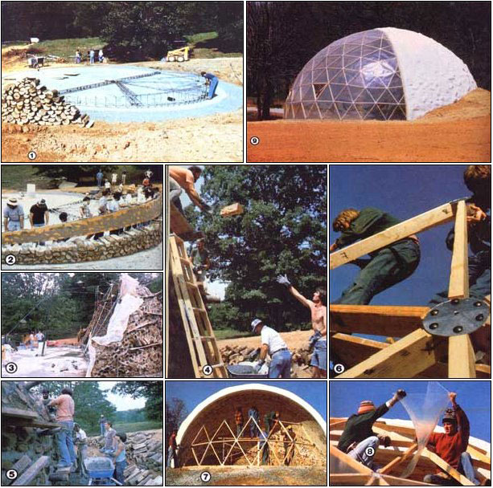

[1] The frame of the plywood form is assembled on the concrete foundation, while a pile of cordwood awaits willing hands. [2] Eager seminar attendees lift the truss to a new position as the rear wall of the dome begins to take shape. [3] ""Deadmen "" bristle like porcupine quills on the outside of the structure. They'll be sawed off when they're no longer needed.[4] Two of the volunteer workers invented this ""airmail ""system. [5] Twelve-year-old John Carney did a man's job. [6] The geodesic framework is assembled ... [7] rises to meet the cordwood, and ... [8] is glazed. [9] Cheers! MOM's greenhouse dome is done!